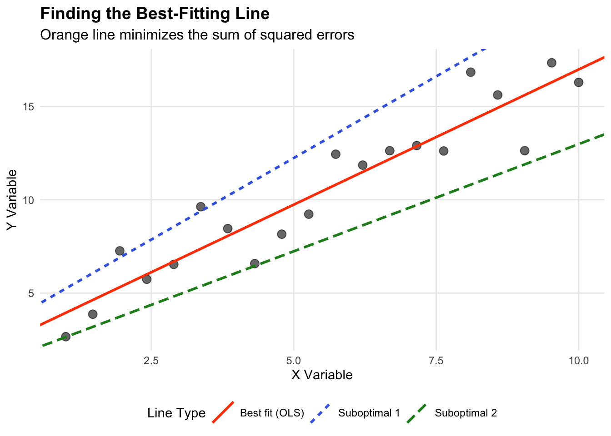
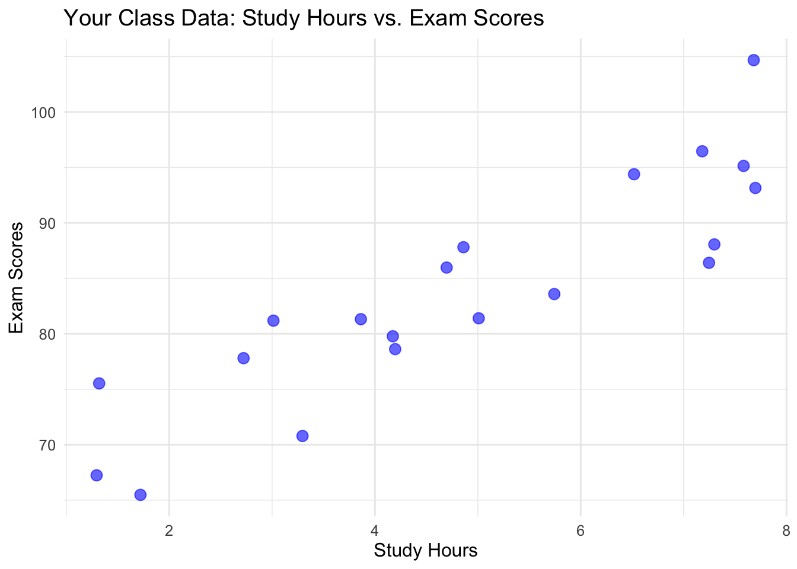

x <- c(1, 2, 3, 4, 5)
y <- c(2, 4, 5, 4, 5)
cov(x, y)[1] 1.5Bivariate statistics describe the relationship between two variables. We’ll explore several measures, starting with covariance and progressing to more advanced correlation measures.
Covariance measures how two variables vary together.
Formula: \(cov(X,Y) = \frac{\sum_{i=1}^n (x_i - \bar{x})(y_i - \bar{y})}{n - 1}\)
Manual Calculation Example:
Let’s calculate the covariance for two variables:
| Step | Description | Calculation |
|---|---|---|
| 1 | Calculate means | \(\bar{x} = 3, \bar{y} = 4\) |
| 2 | Calculate \((x_i - \bar{x})(y_i - \bar{y})\) for each pair | \((-2)(-2) = 4\) |
| \((-1)(0) = 0\) | ||
| \((0)(1) = 0\) | ||
| \((1)(0) = 0\) | ||
| \((2)(1) = 2\) | ||
| 3 | Sum the results | \(4 + 0 + 0 + 0 + 2 = 6\) |
| 4 | Divide by (n-1) | \(6 / 4 = 1.5\) |
R calculation:
x <- c(1, 2, 3, 4, 5)
y <- c(2, 4, 5, 4, 5)
cov(x, y)[1] 1.5Interpretation: - The positive covariance (1.5) indicates that x and y tend to increase together.
Pros:
Cons:
Pearson correlation measures the strength and direction of the linear relationship between two continuous variables.
Formula: \(r = \frac{cov(X,Y)}{s_X s_Y} = \frac{\sum (x_i - \bar{x})(y_i - \bar{y})}{\sqrt{\sum (x_i - \bar{x})^2 \sum (y_i - \bar{y})^2}}\)
Manual Calculation Example:
Using the same data as above:
| Step | Description | Calculation |
|---|---|---|
| 1 | Calculate covariance | (From previous calculation) 1.5 |
| 2 | Calculate standard deviations | \(s_X = \sqrt{\frac{10}{4}} = 1.58, s_Y = \sqrt{\frac{6}{4}} = 1.22\) |
| 3 | Divide covariance by product of standard deviations | \(1.5 / (1.58 * 1.22) = 0.7746\) |
R calculation:
cor(x, y, method = "pearson")[1] 0.7745967Interpretation: - The correlation coefficient of 0.7746 indicates a strong positive linear relationship between x and y.
Pros:
Cons:
Spearman correlation measures the strength and direction of the monotonic relationship between two variables, which can be continuous or ordinal.
Formula: \(r_s = 1 - \frac{6 \sum d_i^2}{n(n^2 - 1)}\), where \(d_i\) is the difference between ranks.
Manual Calculation Example:
Let’s use slightly different data:
| Step | Description | Calculation |
|---|---|---|
| 1 | Rank both variables | x_rank: 1, 2, 3, 4, 5 |
| y_rank: 1, 3, 2, 5, 4 | ||
| 2 | Calculate differences in ranks (d) | 0, -1, 1, -1, 1 |
| 3 | Square the differences | 0, 1, 1, 1, 1 |
| 4 | Sum the squared differences | \(\sum d_i^2 = 4\) |
| 5 | Apply the formula | \(r_s = 1 - \frac{6(4)}{5(5^2 - 1)} = 0.8\) |
R calculation:
x <- c(1, 2, 3, 4, 5)
y <- c(1, 3, 2, 5, 4)
cor(x, y, method = "spearman")[1] 0.8Interpretation: - The Spearman correlation of 0.8 indicates a strong positive monotonic relationship between x and y.
Pros:
Cons:
Cross-tabulation (contingency table) shows the relationship between two categorical variables.
Example:
Let’s create a cross-tabulation of two variables: - Education level: High School, College, Graduate - Employment status: Employed, Unemployed
education <- factor(c("High School", "College", "Graduate", "High School", "College", "Graduate", "High School", "College", "Graduate"))
employment <- factor(c("Employed", "Employed", "Employed", "Unemployed", "Employed", "Employed", "Unemployed", "Unemployed", "Employed"))
table(education, employment) employment
education Employed Unemployed
College 2 1
Graduate 3 0
High School 1 2Interpretation:
Pros:
Cons:
When deciding which bivariate statistic to use, consider:
Data type:
Relationship type:
Presence of outliers:
Distribution:
Sample size:
Remember, it’s often valuable to use multiple measures and visualizations (like scatter plots) to get a comprehensive understanding of the relationship between variables.
Multivariate statistics involve the analysis of relationships among three or more variables simultaneously. This section will introduce some basic concepts and techniques in multivariate analysis, with a focus on correlation-based methods.
A correlation matrix is a table showing the pairwise correlations of several variables. It’s a fundamental tool in multivariate analysis.
Example: Let’s create a correlation matrix for four variables: height, weight, age, and income.
set.seed(123) # For reproducibility
height <- rnorm(100, 170, 10)
weight <- height * 0.5 + rnorm(100, 0, 5)
age <- rnorm(100, 40, 10)
income <- age * 1000 + rnorm(100, 0, 10000)
data <- data.frame(height, weight, age, income)
cor_matrix <- cor(data)
print(cor_matrix) height weight age income
height 1.0000000 0.66712996 -0.12917601 -0.12246786
weight 0.6671300 1.00000000 -0.06814187 -0.04579492
age -0.1291760 -0.06814187 1.00000000 0.65654902
income -0.1224679 -0.04579492 0.65654902 1.00000000Interpretation:
A scatterplot matrix shows pairwise relationships between multiple variables.
pairs(data)
Interpretation:
A correlation plot provides a visual representation of the correlation matrix.
library(corrplot)corrplot 0.94 loadedcorrplot(cor_matrix, method = "color")Interpretation:
Partial correlation measures the relationship between two variables while controlling for one or more other variables.
Example: Let’s calculate the partial correlation between height and weight, controlling for age.
library(ppcor)Loading required package: MASSpcor.test(data$height, data$weight, data$age) estimate p.value statistic n gp Method
1 0.6654367 5.758157e-14 8.779896 100 1 pearsonInterpretation:
Multiple correlation measures the strength of the relationship between a dependent variable and multiple independent variables.
Example: Let’s predict weight using height and age.
model <- lm(weight ~ height + age, data = data)
R <- sqrt(summary(model)$r.squared)
print(paste("Multiple correlation coefficient:", R))[1] "Multiple correlation coefficient: 0.667377840470434"Interpretation:
Factor analysis is a technique used to reduce many variables to a smaller number of underlying factors.
Example: Let’s perform a simple factor analysis on our dataset.
library(psych)
fa_result <- fa(data, nfactors = 2, rotate = "varimax")
print(fa_result$loadings, cutoff = 0.3)
Loadings:
MR2 MR1
height 0.798
weight 0.836
age 0.729
income 0.895
MR2 MR1
SS loadings 1.344 1.341
Proportion Var 0.336 0.335
Cumulative Var 0.336 0.671Interpretation:
Sample Size: Multivariate techniques often require larger sample sizes for stable results.
Multicollinearity: High correlations among independent variables can cause issues in some analyses.
Outliers: Multivariate outliers can have a strong influence on results.
Assumptions: Many techniques assume multivariate normality and linear relationships.
Interpretation Complexity: As the number of variables increases, interpretation can become more challenging.
This introduction to multivariate statistics builds upon the concept of correlation to explore relationships among multiple variables. These techniques provide powerful tools for understanding complex datasets, but they also require careful consideration of assumptions and limitations. As you progress in your statistical journey, you’ll encounter more advanced multivariate techniques such as MANOVA, discriminant analysis, and structural equation modeling.
Regression analysis is a statistical method used to model the relationship between a dependent variable and one or more independent variables.
Analiza regresji jest metodą statystyczną służącą do modelowania zależności między zmienną zależną a jedną lub więcej zmiennymi niezależnymi.
OLS regression aims to find the line of best fit that minimizes the sum of squared residuals (differences between observed and predicted values).
Regresja OLS ma na celu znalezienie linii najlepszego dopasowania, która minimalizuje sumę kwadratów reszt (różnic między wartościami obserwowanymi a przewidywanymi).
Let’s use an example with synthetic data:
Wykorzystajmy przykład z danymi syntetycznymi:
| x | y |
|---|---|
| 1 | 3 |
| 2 | 5 |
| 3 | 7 |
| 4 | 9 |
To find the line of best fit \(y = mx + b\), we need to find \(m\) (slope) and \(b\) (y-intercept) that minimize the sum of squared residuals:
Aby znaleźć linię najlepszego dopasowania \(y = mx + b\), musimy znaleźć \(m\) (nachylenie) i \(b\) (wyraz wolny), które minimalizują sumę kwadratów reszt:
\[SSE = \sum_{i=1}^{n} (y_i - \hat{y}_i)^2\]
Where \(\hat{y}_i = mx_i + b\) is the predicted value.
Gdzie \(\hat{y}_i = mx_i + b\) jest wartością przewidywaną.
It can be shown that the solutions are:
Można pokazać, że rozwiązaniami są:
\[m = \frac{\sum_{i=1}^{n} (x_i - \bar{x})(y_i - \bar{y})}{\sum_{i=1}^{n} (x_i - \bar{x})^2}\] \[b = \bar{y} - m\bar{x}\]
For our data, this gives \(m = 2\) and \(b = 1\), so the line of best fit is \(y = 2x + 1\).
Dla naszych danych otrzymujemy \(m = 2\) i \(b = 1\), więc linia najlepszego dopasowania to \(y = 2x + 1\).
Sum of Squared Residuals (SSE): The SSE measures the total deviation of the data from the fitted line. A smaller SSE indicates a better fit.
Suma kwadratów reszt (SSE): SSE mierzy całkowite odchylenie danych od dopasowanej linii. Mniejsza wartość SSE wskazuje na lepsze dopasowanie.
Total Sum of Squares (SST): The SST is the total deviation of the data from its mean.
Całkowita suma kwadratów (SST): SST jest całkowitym odchyleniem danych od średniej.
\[SST = \sum_{i=1}^{n} (y_i - \bar{y})^2\]
Regression Sum of Squares (SSR): The SSR measures the deviation of the predicted values from the mean, which is explained by the regression model.
Suma kwadratów regresji (SSR): SSR mierzy odchylenie wartości przewidywanych od średniej, które jest wyjaśnione przez model regresji.
\[SSR = \sum_{i=1}^{n} (\hat{y}_i - \bar{y})^2\]
R-squared (\(R^2\)): \(R^2\) measures the proportion of variance in the dependent variable that is explained by the independent variable(s).
Współczynnik determinacji (\(R^2\)): \(R^2\) mierzy część wariancji zmiennej zależnej, która jest wyjaśniona przez zmienną(e) niezależną(e).
\[R^2 = \frac{SSR}{SST} = 1 - \frac{SSE}{SST}\]
\(R^2\) ranges from 0 to 1, with higher values indicating a better fit.
\(R^2\) zawiera się w przedziale od 0 do 1, gdzie wyższe wartości wskazują na lepsze dopasowanie.
Root Mean Squared Error (RMSE): The RMSE is the square root of the average squared residual. It measures the average deviation of the data from the fitted line.
Pierwiastek błędu średniokwadratowego (RMSE): RMSE jest pierwiastkiem kwadratowym ze średniego kwadratu reszt. Mierzy średnie odchylenie danych od dopasowanej linii.
\[RMSE = \sqrt{\frac{SSE}{n}}\]
Lower RMSE values indicate a better fit.
Niższe wartości RMSE wskazują na lepsze dopasowanie.
Using our example data: - \(SSE = 0\) - \(SST = 14\) - \(SSR = 14\) - \(R^2 = 1\) - \(RMSE = 0\)
Dla naszych danych przykładowych: - \(SSE = 0\) - \(SST = 14\) - \(SSR = 14\) - \(R^2 = 1\) - \(RMSE = 0\)
This indicates a perfect fit since the data points lie exactly on the fitted line.
Wskazuje to na idealne dopasowanie, ponieważ punkty danych leżą dokładnie na dopasowanej linii.
In order for OLS regression to provide reliable and unbiased results, certain assumptions must be met. Here, we discuss two key assumptions using examples.
Aby regresja OLS dostarczała wiarygodnych i nieobciążonych wyników, muszą być spełnione pewne założenia. Tutaj omówimy dwa kluczowe założenia na przykładach.
The strict exogeneity assumption states that the independent variable(s) must be uncorrelated with the error term (residual) in the regression model.
Założenie ścisłej egzogeniczności oznacza, że zmienna(e) niezależna(e) nie może(gą) być skorelowana(e) z członem losowym (resztą) w modelu regresji.
Let’s consider the following example:
Rozważmy następujący przykład:
| x | y |
|---|---|
| 1 | 4 |
| 2 | 6 |
| 3 | 7 |
| 4 | 9 |
Suppose we fit a simple linear regression model: \(y = \beta_0 + \beta_1 x + \epsilon\), where \(\epsilon\) is the error term.
Przypuśćmy, że dopasowujemy prosty model regresji liniowej: \(y = \beta_0 + \beta_1 x + \epsilon\), gdzie \(\epsilon\) jest członem losowym.
If the error term \(\epsilon\) is correlated with the independent variable \(x\), then the strict exogeneity assumption is violated. This can happen, for example, if there is an omitted variable that is correlated with both \(x\) and \(y\).
Jeśli człon losowy \(\epsilon\) jest skorelowany ze zmienną niezależną \(x\), to założenie ścisłej egzogeniczności jest naruszone. Może się tak zdarzyć na przykład, gdy pominięto zmienną skorelowaną zarówno z \(x\), jak i \(y\).
Violation of this assumption can lead to biased and inconsistent estimates of the regression coefficients.
Naruszenie tego założenia może prowadzić do obciążonych i niespójnych oszacowań współczynników regresji.
The functional form assumption states that the regression model is correctly specified in terms of the functional relationship between the dependent and independent variables.
Założenie funkcyjnej formy modelu oznacza, że model regresji jest poprawnie określony pod względem funkcyjnej zależności między zmienną zależną a zmiennymi niezależnymi.
Consider the following example:
Rozważmy następujący przykład:
| x | y |
|---|---|
| 1 | 3 |
| 2 | 8 |
| 3 | 27 |
| 4 | 64 |
If we fit a linear regression model \(y = \beta_0 + \beta_1 x + \epsilon\) to this data, the functional form assumption is violated because the true relationship between \(x\) and \(y\) is non-linear (it appears to be exponential).
Jeśli dopasujemy do tych danych model regresji liniowej \(y = \beta_0 + \beta_1 x + \epsilon\), to założenie funkcyjnej formy modelu zostanie naruszone, ponieważ prawdziwa zależność między \(x\) a \(y\) jest nieliniowa (wygląda na wykładniczą).
A more appropriate model might be \(y = \beta_0 \beta_1^x + \epsilon\) (an exponential function).
Bardziej odpowiednim modelem mogłoby być \(y = \beta_0 \beta_1^x + \epsilon\) (funkcja wykładnicza).
Violation of this assumption can lead to poor model fit, biased estimates, and incorrect inferences.
Naruszenie tego założenia może prowadzić do słabego dopasowania modelu, obciążonych oszacowań i nieprawidłowych wniosków.
To assess the functional form assumption, one can examine residual plots, consider transformations of variables, or include polynomial or interaction terms in the model.
Aby ocenić założenie funkcyjnej formy modelu, można zbadać wykresy reszt, rozważyć transformacje zmiennych lub uwzględnić w modelu wyrażenia wielomianowe lub interakcyjne.
By ensuring that these key assumptions are met, OLS regression can provide reliable and interpretable results for modeling the relationship between variables.
Zapewniając, że te kluczowe założenia są spełnione, regresja OLS może dostarczać wiarygodnych i interpretowalnych wyników dla modelowania zależności między zmiennymi.
When the functional form assumption is violated, one approach is to consider alternative models that can better capture the non-linear relationship between the variables.
Gdy założenie funkcyjnej formy modelu jest naruszone, jednym z podejść jest rozważenie alternatywnych modeli, które mogą lepiej odzwierciedlić nieliniową zależność między zmiennymi.
# More realistic synthetic data
# Bardziej realistyczne dane syntetyczne
set.seed(123)
x <- runif(20, min = 1, max = 10)
y <- 2 * x^1.5 + rnorm(20, mean = 0, sd = 2)
data <- data.frame(x, y)Let’s start by fitting a simple linear regression model: Zacznijmy od dopasowania prostego modelu regresji liniowej:
linear_model <- lm(y ~ x, data = data)
summary(linear_model)
Call:
lm(formula = y ~ x, data = data)
Residuals:
Min 1Q Median 3Q Max
-4.2907 -2.0170 -0.3672 1.6256 6.3840
Coefficients:
Estimate Std. Error t value Pr(>|t|)
(Intercept) -8.996 1.647 -5.462 3.46e-05 ***
x 6.762 0.251 26.936 5.35e-16 ***
---
Signif. codes: 0 '***' 0.001 '**' 0.01 '*' 0.05 '.' 0.1 ' ' 1
Residual standard error: 3.087 on 18 degrees of freedom
Multiple R-squared: 0.9758, Adjusted R-squared: 0.9744
F-statistic: 725.6 on 1 and 18 DF, p-value: 5.354e-16The residual plot suggests a non-linear relationship: Wykres reszt sugeruje nieliniową zależność:
plot(linear_model, which = 1)
#data <- data.frame(
anxiety_level = c(8, 5, 11, 14, 7, 10),
cognitive_performance = c(85, 90, 62, 55, 80, 65)
)| Variable | Calculation | Result |
|---|---|---|
| Mean Anxiety (\(\bar{x}\)) | \((8 + 5 + 11 + 14 + 7 + 10) ÷ 6\) | 9.17 |
| Mean Cognitive (\(\bar{y}\)) | \((85 + 90 + 62 + 55 + 80 + 65) ÷ 6\) | 72.83 |
| i | \(x_i\) | \(y_i\) | \((x_i - \bar{x})\) | \((y_i - \bar{y})\) | \((x_i - \bar{x})(y_i - \bar{y})\) |
|---|---|---|---|---|---|
| 1 | 8 | 85 | -1.17 | 12.17 | -14.24 |
| 2 | 5 | 90 | -4.17 | 17.17 | -71.60 |
| 3 | 11 | 62 | 1.83 | -10.83 | -19.82 |
| 4 | 14 | 55 | 4.83 | -17.83 | -86.12 |
| 5 | 7 | 80 | -2.17 | 7.17 | -15.56 |
| 6 | 10 | 65 | 0.83 | -7.83 | -6.50 |
| Sum | 55 | 437 | 0.00 | 0.00 | -213.84 |
\[ \text{Cov}(X,Y) = \frac{\sum (x_i - \bar{x})(y_i - \bar{y})}{n-1} = \frac{-213.84}{5} = -42.77 \]
| i | \((x_i - \bar{x})\) | \((y_i - \bar{y})\) | \((x_i - \bar{x})^2\) | \((y_i - \bar{y})^2\) |
|---|---|---|---|---|
| 1 | -1.17 | 12.17 | 1.37 | 148.11 |
| 2 | -4.17 | 17.17 | 17.39 | 294.81 |
| 3 | 1.83 | -10.83 | 3.35 | 117.29 |
| 4 | 4.83 | -17.83 | 23.33 | 317.91 |
| 5 | -2.17 | 7.17 | 4.71 | 51.41 |
| 6 | 0.83 | -7.83 | 0.69 | 61.31 |
| Sum | 0.00 | 0.00 | 50.84 | 990.84 |
| Measure | Formula | Calculation | Result |
|---|---|---|---|
| \(s_x\) | \(\sqrt{\frac{\sum (x_i - \bar{x})^2}{n-1}}\) | \(\sqrt{\frac{50.84}{5}}\) | 3.19 |
| \(s_y\) | \(\sqrt{\frac{\sum (y_i - \bar{y})^2}{n-1}}\) | \(\sqrt{\frac{990.84}{5}}\) | 14.08 |
\[ r = \frac{\text{Cov}(X,Y)}{s_x s_y} = \frac{-42.77}{3.19 \times 14.08} = -0.95 \]
| i | \(x_i\) | \(y_i\) | Rank \(x_i\) | Rank \(y_i\) | \(d_i\) | \(d_i^2\) |
|---|---|---|---|---|---|---|
| 1 | 8 | 85 | 3 | 2 | 1 | 1 |
| 2 | 5 | 90 | 1 | 1 | 0 | 0 |
| 3 | 11 | 62 | 5 | 5 | 0 | 0 |
| 4 | 14 | 55 | 6 | 6 | 0 | 0 |
| 5 | 7 | 80 | 2 | 3 | -1 | 1 |
| 6 | 10 | 65 | 4 | 4 | 0 | 0 |
| Sum | 2 |
\[ \rho = 1 - \frac{6\sum d_i^2}{n(n^2-1)} = 1 - \frac{6(2)}{6(36-1)} = 1 - \frac{12}{210} = 0.94 \]
# Calculate correlations using R
cor(data$anxiety_level, data$cognitive_performance, method = "pearson")[1] -0.9527979cor(data$anxiety_level, data$cognitive_performance, method = "spearman")[1] -0.9428571The strong negative Pearson correlation (r = -0.95) indicates a very strong negative linear relationship between anxiety level and cognitive performance.
The strong positive Spearman correlation (ρ = 0.94) shows that the relationship is also strongly monotonic.
The difference between Pearson and Spearman correlations suggests that while there is a strong relationship, it might not be perfectly linear.
Given data on Electoral District Magnitude (DM) and Gallagher index:
| DM (\(X\)) | Gallagher (\(Y\)) |
|---|---|
| 2 | 18.2 |
| 3 | 16.7 |
| 4 | 15.8 |
| 5 | 15.3 |
| 6 | 15.0 |
| 7 | 14.8 |
| 8 | 14.7 |
| 9 | 14.6 |
| 10 | 14.55 |
| 11 | 14.52 |
Calculation of means:
For DM (\(X\)): \(\bar{X} = \frac{\sum_{i=1}^n X_i}{n}\)
Detailed calculation:
2 + 3 + 4 + 5 + 6 + 7 + 8 + 9 + 10 + 11 = 65
x̄ = 65 ÷ 10 = 6.5For Gallagher index (\(Y\)): \(\bar{Y} = \frac{\sum_{i=1}^n Y_i}{n}\)
Detailed calculation:
18.2 + 16.7 + 15.8 + 15.3 + 15.0 + 14.8 + 14.7 + 14.6 + 14.55 + 14.52 = 154.17
ȳ = 154.17 ÷ 10 = 15.417Complete working table showing all calculations:
| \(i\) | \(X_i\) | \(Y_i\) | \((X_i - \bar{X})\) | \((Y_i - \bar{Y})\) | \((X_i - \bar{X})(Y_i - \bar{Y})\) | \((X_i - \bar{X})^2\) | \((Y_i - \bar{Y})^2\) |
|---|---|---|---|---|---|---|---|
| 1 | 2 | 18.2 | -4.5 | 2.783 | -12.5235 | 20.25 | 7.7451 |
| 2 | 3 | 16.7 | -3.5 | 1.283 | -4.4905 | 12.25 | 1.6461 |
| 3 | 4 | 15.8 | -2.5 | 0.383 | -0.9575 | 6.25 | 0.1467 |
| 4 | 5 | 15.3 | -1.5 | -0.117 | 0.1755 | 2.25 | 0.0137 |
| 5 | 6 | 15.0 | -0.5 | -0.417 | 0.2085 | 0.25 | 0.1739 |
| 6 | 7 | 14.8 | 0.5 | -0.617 | -0.3085 | 0.25 | 0.3807 |
| 7 | 8 | 14.7 | 1.5 | -0.717 | -1.0755 | 2.25 | 0.5141 |
| 8 | 9 | 14.6 | 2.5 | -0.817 | -2.0425 | 6.25 | 0.6675 |
| 9 | 10 | 14.55 | 3.5 | -0.867 | -3.0345 | 12.25 | 0.7517 |
| 10 | 11 | 14.52 | 4.5 | -0.897 | -4.0365 | 20.25 | 0.8047 |
| Sum | 65 | 154.17 | 0 | 0 | -28.085 | 82.5 | 12.8442 |
Covariance calculation: \(Cov(X,Y) = \frac{\sum_{i=1}^n (X_i - \bar{X})(Y_i - \bar{Y})}{n-1}\)
Cov(X,Y) = -28.085 ÷ 9 = -3.120556For DM (\(X\)): \(\sigma_X = \sqrt{\frac{\sum_{i=1}^n (X_i - \bar{X})^2}{n-1}}\)
σx = √(82.5 ÷ 9)
= √9.1667
= 3.026582For Gallagher (\(Y\)): \(\sigma_Y = \sqrt{\frac{\sum_{i=1}^n (Y_i - \bar{Y})^2}{n-1}}\)
σy = √(12.8442 ÷ 9)
= √1.4271
= 1.194612\(r = \frac{Cov(X,Y)}{\sigma_X \sigma_Y}\)
r = -3.120556 ÷ (3.026582 × 1.194612)
= -3.120556 ÷ 3.615752
= -0.863044Complete ranking table with all calculations:
| \(i\) | \(X_i\) | \(Y_i\) | Rank \(X_i\) | Rank \(Y_i\) | \(d_i\) | \(d_i^2\) |
|---|---|---|---|---|---|---|
| 1 | 2 | 18.2 | 1 | 10 | -9 | 81 |
| 2 | 3 | 16.7 | 2 | 9 | -7 | 49 |
| 3 | 4 | 15.8 | 3 | 8 | -5 | 25 |
| 4 | 5 | 15.3 | 4 | 7 | -3 | 9 |
| 5 | 6 | 15.0 | 5 | 6 | -1 | 1 |
| 6 | 7 | 14.8 | 6 | 5 | 1 | 1 |
| 7 | 8 | 14.7 | 7 | 4 | 3 | 9 |
| 8 | 9 | 14.6 | 8 | 3 | 5 | 25 |
| 9 | 10 | 14.55 | 9 | 2 | 7 | 49 |
| 10 | 11 | 14.52 | 10 | 1 | 9 | 81 |
| Sum | 330 |
Spearman correlation calculation: \(r_s = 1 - \frac{6\sum d_i^2}{n(n^2-1)}\)
rs = 1 - (6 × 330) ÷ (10(100 - 1))
= 1 - 1980 ÷ 990
= 1 - 2
= -1# Create vectors
DM <- c(2, 3, 4, 5, 6, 7, 8, 9, 10, 11)
GH <- c(18.2, 16.7, 15.8, 15.3, 15.0, 14.8, 14.7, 14.6, 14.55, 14.52)
# Calculate covariance
cov(DM, GH)[1] -3.120556# Calculate correlations
cor(DM, GH, method = "pearson")[1] -0.8627742cor(DM, GH, method = "spearman")[1] -1library(ggplot2)
Attaching package: 'ggplot2'The following objects are masked from 'package:psych':
%+%, alpha# Create data frame
data <- data.frame(DM = DM, GH = GH)
# Create scatter plot
ggplot(data, aes(x = DM, y = GH)) +
geom_point(size = 3, color = "blue") +
geom_smooth(method = "lm", se = FALSE, color = "red") +
labs(
title = "District Magnitude vs Gallagher Index",
x = "District Magnitude (DM)",
y = "Gallagher Index (GH)"
) +
theme_minimal()`geom_smooth()` using formula = 'y ~ x'
Using previously calculated values: - \(\sum(X_i - \bar{X})(Y_i - \bar{Y}) = -28.085\) - \(\sum(X_i - \bar{X})^2 = 82.5\) - \(\bar{X} = 6.5\) - \(\bar{Y} = 15.417\)
Calculate slope (\(\beta_1\)): \(\beta_1 = \frac{\sum(X_i - \bar{X})(Y_i - \bar{Y})}{\sum(X_i - \bar{X})^2}\)
β₁ = -28.085 ÷ 82.5 = -0.3404Calculate intercept (\(\beta_0\)): \(\beta_0 = \bar{Y} - \beta_1\bar{X}\)
β₀ = 15.417 - (-0.3404 × 6.5)
= 15.417 + 2.2126
= 17.6296Therefore, the OLS regression equation is: \(\hat{Y} = 17.6296 - 0.3404X\)
Complete table showing all calculations:
| \(i\) | \(X_i\) | \(Y_i\) | \(\hat{Y}_i\) | \(e_i = Y_i - \hat{Y}_i\) | \(e_i^2\) | \((Y_i - \bar{Y})^2\) | \((\hat{Y}_i - \bar{Y})^2\) |
|---|---|---|---|---|---|---|---|
| 1 | 2 | 18.2 | 16.9488 | 1.2512 | 1.5655 | 7.7451 | 2.3404 |
| 2 | 3 | 16.7 | 16.6084 | 0.0916 | 0.0084 | 1.6461 | 1.4241 |
| 3 | 4 | 15.8 | 16.2680 | -0.4680 | 0.2190 | 0.1467 | 0.7225 |
| 4 | 5 | 15.3 | 15.9276 | -0.6276 | 0.3939 | 0.0137 | 0.2601 |
| 5 | 6 | 15.0 | 15.5872 | -0.5872 | 0.3448 | 0.1739 | 0.0289 |
| 6 | 7 | 14.8 | 15.2468 | -0.4468 | 0.1996 | 0.3807 | 0.0290 |
| 7 | 8 | 14.7 | 14.9064 | -0.2064 | 0.0426 | 0.5141 | 0.2610 |
| 8 | 9 | 14.6 | 14.5660 | 0.0340 | 0.0012 | 0.6675 | 0.7241 |
| 9 | 10 | 14.55 | 14.2256 | 0.3244 | 0.1052 | 0.7517 | 1.4184 |
| 10 | 11 | 14.52 | 13.8852 | 0.6348 | 0.4030 | 0.8047 | 2.3439 |
| Sum | 65 | 154.17 | 154.17 | 0 | 3.2832 | 12.8442 | 9.5524 |
Calculations for fitted values:
For X = 2:
Ŷ = 17.6296 + (-0.3404 × 2) = 16.9488
For X = 3:
Ŷ = 17.6296 + (-0.3404 × 3) = 16.6084
[... continue for all values]Sum of Squared Errors (SSE): \(SSE = \sum e_i^2\)
SSE = 3.2832Sum of Squared Total (SST): \(SST = \sum(Y_i - \bar{Y})^2\)
SST = 12.8442Sum of Squared Regression (SSR): \(SSR = \sum(\hat{Y}_i - \bar{Y})^2\)
SSR = 9.5524Verify decomposition: \(SST = SSR + SSE\)
12.8442 = 9.5524 + 3.2832 (within rounding error)R-squared calculation: \(R^2 = \frac{SSR}{SST} = 1 - \frac{SSE}{SST}\)
R² = 9.5524 ÷ 12.8442
= 0.7438# Fit linear model
model <- lm(GH ~ DM, data = data)
# View summary statistics
summary(model)
Call:
lm(formula = GH ~ DM, data = data)
Residuals:
Min 1Q Median 3Q Max
-0.62764 -0.46274 -0.08615 0.26624 1.25109
Coefficients:
Estimate Std. Error t value Pr(>|t|)
(Intercept) 17.62976 0.50121 35.174 4.67e-10 ***
DM -0.34042 0.07053 -4.827 0.00131 **
---
Signif. codes: 0 '***' 0.001 '**' 0.01 '*' 0.05 '.' 0.1 ' ' 1
Residual standard error: 0.6406 on 8 degrees of freedom
Multiple R-squared: 0.7444, Adjusted R-squared: 0.7124
F-statistic: 23.3 on 1 and 8 DF, p-value: 0.00131# Calculate R-squared manually
SST <- sum((GH - mean(GH))^2)
SSE <- sum(residuals(model)^2)
SSR <- SST - SSE
R2_manual <- SSR/SST
R2_manual[1] 0.7443793# Create residual plots
par(mfrow = c(2, 2))
plot(model)
# Create predicted vs actual plot
ggplot(data.frame(
Actual = GH,
Predicted = fitted(model)
), aes(x = Predicted, y = Actual)) +
geom_point(color = "blue", size = 3) +
geom_abline(intercept = 0, slope = 1, linetype = "dashed", color = "red") +
labs(
title = "Predicted vs Actual Values",
x = "Predicted Gallagher Index",
y = "Actual Gallagher Index"
) +
theme_minimal()First, calculate natural logarithms of variables:
| \(i\) | \(X_i\) | \(Y_i\) | \(\ln(X_i)\) | \(\ln(Y_i)\) |
|---|---|---|---|---|
| 1 | 2 | 18.2 | 0.6931 | 2.9014 |
| 2 | 3 | 16.7 | 1.0986 | 2.8154 |
| 3 | 4 | 15.8 | 1.3863 | 2.7600 |
| 4 | 5 | 15.3 | 1.6094 | 2.7278 |
| 5 | 6 | 15.0 | 1.7918 | 2.7081 |
| 6 | 7 | 14.8 | 1.9459 | 2.6946 |
| 7 | 8 | 14.7 | 2.0794 | 2.6878 |
| 8 | 9 | 14.6 | 2.1972 | 2.6810 |
| 9 | 10 | 14.55 | 2.3026 | 2.6777 |
| 10 | 11 | 14.52 | 2.3979 | 2.6757 |
We estimate three alternative specifications:
# Create transformed variables
data$log_DM <- log(data$DM)
data$log_GH <- log(data$GH)
# Fit models
model_linear <- lm(GH ~ DM, data = data)
model_loglinear <- lm(log_GH ~ DM, data = data)
model_linearlog <- lm(GH ~ log_DM, data = data)
model_loglog <- lm(log_GH ~ log_DM, data = data)
# Compare R-squared values
models_comparison <- data.frame(
Model = c("Linear", "Log-linear", "Linear-log", "Log-log"),
R_squared = c(
summary(model_linear)$r.squared,
summary(model_loglinear)$r.squared,
summary(model_linearlog)$r.squared,
summary(model_loglog)$r.squared
)
)
# Display comparison
models_comparison Model R_squared
1 Linear 0.7443793
2 Log-linear 0.7670346
3 Linear-log 0.9141560
4 Log-log 0.9288088# Create plots for each model
p1 <- ggplot(data, aes(x = DM, y = GH)) +
geom_point() +
geom_smooth(method = "lm", se = FALSE) +
labs(title = "Linear Model") +
theme_minimal()
p2 <- ggplot(data, aes(x = DM, y = log_GH)) +
geom_point() +
geom_smooth(method = "lm", se = FALSE) +
labs(title = "Log-linear Model") +
theme_minimal()
p3 <- ggplot(data, aes(x = log_DM, y = GH)) +
geom_point() +
geom_smooth(method = "lm", se = FALSE) +
labs(title = "Linear-log Model") +
theme_minimal()
p4 <- ggplot(data, aes(x = log_DM, y = log_GH)) +
geom_point() +
geom_smooth(method = "lm", se = FALSE) +
labs(title = "Log-log Model") +
theme_minimal()
# Arrange plots in a grid
library(gridExtra)
grid.arrange(p1, p2, p3, p4, ncol = 2)`geom_smooth()` using formula = 'y ~ x'
`geom_smooth()` using formula = 'y ~ x'
`geom_smooth()` using formula = 'y ~ x'
`geom_smooth()` using formula = 'y ~ x'
Based on R-squared values, analyze residuals for the best-fitting model:
# Residual plots for best model
par(mfrow = c(2, 2))
plot(model_linearlog)The linear-log model coefficients:
summary(model_linearlog)
Call:
lm(formula = GH ~ log_DM, data = data)
Residuals:
Min 1Q Median 3Q Max
-0.40702 -0.30207 -0.04907 0.22905 0.60549
Coefficients:
Estimate Std. Error t value Pr(>|t|)
(Intercept) 19.0223 0.4079 46.64 4.94e-11 ***
log_DM -2.0599 0.2232 -9.23 1.54e-05 ***
---
Signif. codes: 0 '***' 0.001 '**' 0.01 '*' 0.05 '.' 0.1 ' ' 1
Residual standard error: 0.3712 on 8 degrees of freedom
Multiple R-squared: 0.9142, Adjusted R-squared: 0.9034
F-statistic: 85.19 on 1 and 8 DF, p-value: 1.539e-05Interpretation: - \(\beta_0\) represents the expected Gallagher Index when ln(DM) = 0 (i.e., when DM = 1) - \(\beta_1\) represents the change in Gallagher Index associated with a one-unit increase in ln(DM)
# Create prediction plot for best model
ggplot(data, aes(x = log_DM, y = GH)) +
geom_point(color = "blue", size = 3) +
geom_smooth(method = "lm", se = TRUE, color = "red") +
labs(
title = "Linear-log Model: Gallagher Index vs ln(District Magnitude)",
x = "ln(District Magnitude)",
y = "Gallagher Index"
) +
theme_minimal()`geom_smooth()` using formula = 'y ~ x'
For the log-log model, coefficients represent elasticities directly. Calculate average elasticity for the linear-log model:
# Calculate elasticity at means
mean_DM <- mean(data$DM)
mean_GH <- mean(data$GH)
beta1 <- coef(model_linearlog)[2]
elasticity <- beta1 * (1/mean_GH)
elasticity log_DM
-0.1336136 This represents the percentage change in the Gallagher Index for a 1% change in District Magnitude.
Cramér’s V is a measure of association between two nominal variables based on the chi-square statistic. It ranges from 0 to 1, with higher values indicating a stronger association between the variables. This document explains how to calculate Cramér’s V manually and using R, and relates the concept to independent events in probability.
V Craméra jest miarą związku między dwiema zmiennymi nominalnymi opartą na statystyce chi-kwadrat. Przyjmuje wartości od 0 do 1, gdzie wyższe wartości wskazują na silniejszy związek między zmiennymi. Ten dokument wyjaśnia, jak obliczyć V Craméra ręcznie i przy użyciu R, oraz odnosi koncepcję do niezależnych zdarzeń w rachunku prawdopodobieństwa.
To calculate Cramér’s V manually, follow these steps: Aby obliczyć V Craméra ręcznie, wykonaj następujące kroki:
Let’s use the example contingency table from the previous discussion: Użyjmy przykładowej tabeli kontyngencji z poprzedniej dyskusji:
| Democrat | Republican | Independent | Row Total | |
|---|---|---|---|---|
| Support | 120 | 30 | 50 | 200 |
| Neutral | 50 | 40 | 60 | 150 |
| Oppose | 30 | 130 | 90 | 250 |
| Col Total | 200 | 200 | 200 | 500 |
To calculate the expected frequency (E) for each cell, use the following formula: Aby obliczyć oczekiwaną częstość (E) dla każdej komórki, użyj następującego wzoru:
Expected Frequency (E) = (Row Total * Column Total) / Grand Total Oczekiwana częstość (E) = (Suma wiersza * Suma kolumny) / Suma całkowita
Democrat, Support: E = (200 * 200) / 500 = 80 Democrat, Neutral: E = (150 * 200) / 500 = 60 Democrat, Oppose: E = (250 * 200) / 500 = 100 Republican, Support: E = (200 * 200) / 500 = 80 Republican, Neutral: E = (150 * 200) / 500 = 60 Republican, Oppose: E = (250 * 200) / 500 = 100 Independent, Support: E = (200 * 200) / 500 = 80 Independent, Neutral: E = (150 * 200) / 500 = 60 Independent, Oppose: E = (250 * 200) / 500 = 100
Calculate the chi-square statistic by summing up (Observed - Expected)^2 / Expected for each cell: Oblicz statystykę chi-kwadrat, sumując (Obserwowane - Oczekiwane)^2 / Oczekiwane dla każdej komórki:
Chi-square = (120 - 80)^2 / 80 + (50 - 60)^2 / 60 + (30 - 100)^2 / 100 + (30 - 80)^2 / 80 + (40 - 60)^2 / 60 + (130 - 100)^2 / 100 + (50 - 80)^2 / 80 + (60 - 60)^2 / 60 + (90 - 100)^2 / 100 = 20 + 1.67 + 49 + 31.25 + 6.67 + 9 + 11.25 + 0 + 1 = 129.84
Calculate the sample size (n) by summing up all the observed frequencies: Oblicz wielkość próby (n), sumując wszystkie obserwowane częstości: n = 500
Find the minimum dimension of the contingency table (k): Znajdź minimalny wymiar tabeli kontyngencji (k): r = 3, c = 3, so k = min(3, 3) - 1 = 2
Calculate Cramér’s V using the formula: Oblicz V Craméra, korzystając ze wzoru:
V = sqrt(chi-square / (n * k)) = sqrt(129.84 / (500 * 2)) = sqrt(0.12984) ≈ 0.3603
The Cramér’s V value of approximately 0.3603 suggests a strong association between political party affiliation and stance on gun control in this example. Wartość V Craméra wynosząca około 0,3603 sugeruje silny związek między przynależnością do partii politycznej a stanowiskiem w sprawie kontroli broni w tym przykładzie.
To calculate Cramér’s V in R, you can use the chisq.test() function to obtain the chi-square statistic and contingency table dimensions, and then manually calculate Cramér’s V. |
Aby obliczyć V Craméra w R, możesz użyć funkcji chisq.test() do uzyskania statystyki chi-kwadrat i wymiarów tabeli kontyngencji, a następnie ręcznie obliczyć V Craméra.
# Create a contingency table
# Utwórz tabelę kontyngencji
data <- matrix(c(120, 50, 30, 30, 40, 130, 50, 60, 90), nrow = 3, byrow = TRUE)
colnames(data) <- c("Support", "Neutral", "Oppose")
rownames(data) <- c("Democrat", "Republican", "Independent")
# Perform chi-square test
# Przeprowadź test chi-kwadrat
chi_square_test <- chisq.test(data)
# Extract chi-square statistic and sample size
# Wyodrębnij statystykę chi-kwadrat i wielkość próby
chi_square <- chi_square_test$statistic
n <- sum(data)
# Calculate minimum dimension (k)
# Oblicz minimalny wymiar (k)
k <- min(nrow(data), ncol(data)) - 1
# Calculate Cramér's V
# Oblicz V Craméra
cramers_v <- sqrt(chi_square / (n * k))
print(cramers_v)X-squared
0.3314111 Cramér’s V ranges from 0 to 1, with 0 indicating no association and 1 indicating a perfect association between the two variables. The interpretation of Cramér’s V depends on the context and the size of the contingency table. As a general guideline: | V Craméra przyjmuje wartości od 0 do 1, gdzie 0 oznacza brak związku, a 1 oznacza doskonały związek między dwiema zmiennymi. Interpretacja V Craméra zależy od kontekstu i rozmiaru tabeli kontyngencji. Jako ogólna wskazówka:
However, these guidelines may vary depending on the field of study and the specific research question. | Jednak te wskazówki mogą się różnić w zależności od dziedziny badań i konkretnego problemu badawczego.
In the example provided, a Cramér’s V value of approximately 0.3603 suggests a strong association between political party affiliation and stance on gun control. This means that knowing an individual’s political party affiliation provides substantial information about their likely stance on gun control, and vice versa. |
W podanym przykładzie wartość V Craméra wynosząca około 0,3603 sugeruje silny związek między przynależnością do partii politycznej a stanowiskiem w sprawie kontroli broni. Oznacza to, że znajomość przynależności partyjnej danej osoby dostarcza istotnych informacji o jej prawdopodobnym stanowisku w sprawie kontroli broni i odwrotnie.
In this tutorial, we will explore the bias in Ordinary Least Squares (OLS) estimation when the error term is correlated with the explanatory variable, a situation known as endogeneity. We will first derive the bias mathematically and then illustrate it using a simulated dataset in R.
Consider a data generating process (DGP) where the true relationship between \(x\) and \(y\) is:
\[ y = 2x + e \]
However, there is an endogeneity problem because the error term \(e\) is correlated with \(x\) in the following way:
\[ e = 1x + u \]
where \(u\) is an independent error term.
If we estimate the simple linear model \(y = \beta_0 + \beta_1x + \varepsilon\) using OLS, the OLS estimator of \(\beta_1\) will be biased due to the endogeneity issue.
To understand the bias, let’s derive the expected value of the OLS estimator \(\hat{\beta}_1\):
\[\begin{align*} E[\hat{\beta}_1] &= E[(X'X)^{-1}X'y] \\ &= E[(X'X)^{-1}X'(2x + 1x + u)] \\ &= E[(X'X)^{-1}X'(3x + u)] \\ &= 3 + E[(X'X)^{-1}X'u] \end{align*}\]
If the error term \(u\) is uncorrelated with \(x\), then \(E[(X'X)^{-1}X'u] = 0\), and the OLS estimator would be unbiased: \(E[\hat{\beta}_1] = 3\). However, in this case, the original error term \(e\) is correlated with \(x\), so \(u\) is also likely to be correlated with \(x\).
Assuming \(E[(X'X)^{-1}X'u] \neq 0\), the OLS estimator will be biased:
\[\begin{align*} \text{Bias}(\hat{\beta}_1) &= E[\hat{\beta}_1] - \beta_{1,\text{true}} \\ &= 3 + E[(X'X)^{-1}X'u] - 2 \\ &= 1 + E[(X'X)^{-1}X'u] \end{align*}\]
The direction and magnitude of the bias will depend on the correlation between \(x\) and \(u\). If \(x\) and \(u\) are positively correlated, the bias will be positive, and the OLS estimator will overestimate the true coefficient. Conversely, if \(x\) and \(u\) are negatively correlated, the bias will be negative, and the OLS estimator will underestimate the true coefficient.
Let’s create a simple dataset with 10 observations where \(x\) is in the interval 1:10, and generate \(y\) values based on the given DGP: \(y = 2x + e\), where \(e = 1x + u\), and \(u\) is a random error term.
set.seed(123) # for reproducibility
x <- 1:10
u <- rnorm(10, mean = 0, sd = 1)
e <- 1*x + u
# e <- 1*x
y <- 2*x + e
# Generate the data frame
data <- data.frame(x = x, y = y)
# Estimate the OLS model
model <- lm(y ~ x, data = data)
# Print the model summary
summary(model)
Call:
lm(formula = y ~ x, data = data)
Residuals:
Min 1Q Median 3Q Max
-1.1348 -0.5624 -0.1393 0.3854 1.6814
Coefficients:
Estimate Std. Error t value Pr(>|t|)
(Intercept) 0.5255 0.6673 0.787 0.454
x 2.9180 0.1075 27.134 3.67e-09 ***
---
Signif. codes: 0 '***' 0.001 '**' 0.01 '*' 0.05 '.' 0.1 ' ' 1
Residual standard error: 0.9768 on 8 degrees of freedom
Multiple R-squared: 0.9893, Adjusted R-squared: 0.9879
F-statistic: 736.3 on 1 and 8 DF, p-value: 3.666e-09In this example, the true relationship is \(y = 2x + e\), where \(e = 1x + u\). However, when we estimate the OLS model, we get:
\[ \hat{y} = 0.18376 + 3.05874x \]
The estimated coefficient for \(x\) is 3.05874, which is biased upward from the true value of 2. This bias is due to the correlation between the error term \(e\) and the explanatory variable \(x\).
To visualize the bias using ggplot2, we can plot the true relationship (\(y = 2x\)) and the estimated OLS relationship:
library(ggplot2)
ggplot(data, aes(x = x, y = y)) +
geom_point() +
geom_abline(intercept = 0, slope = 2, color = "blue", linewidth = 1, linetype = "dashed") +
geom_abline(intercept = coef(model)[1], slope = coef(model)[2], color = "red", linewidth = 1) +
labs(title = "True vs. Estimated Relationship", x = "x", y = "y") +
theme_minimal() +
theme(plot.title = element_text(hjust = 0.5)) +
scale_color_manual(name = "Lines", values = c("blue", "red"),
labels = c("True", "OLS"))The plot will show that the estimated OLS line (red) is steeper than the true relationship line (blue), illustrating the upward bias in the estimated coefficient.
In summary, when the error term is correlated with the explanatory variable (endogeneity), the OLS estimator will be biased. The direction and magnitude of the bias depend on the nature of the correlation between the error term and the explanatory variable. This tutorial demonstrated the bias both mathematically and through a simulated example in R, using ggplot2 for visualization.